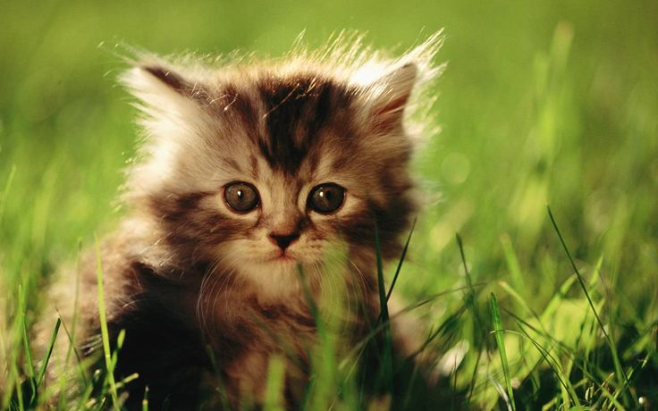

На главную
Практическое задание #1
Кто такие фелиды

Кошачьи — это семействомлекопитающих из отряда Хищные,
которых в просторечии называют кошками. Представителей
этого семейства также называют фелидами
Представители
До наших дней сохранился 41 вид. Вот некоторые из них:
- Тигр
- Канадская рысь
- Оцепот
- Сервал
- Пума
- Рыжая пятнистая кошка
- Азиатская золоьая кошка
Любимые занятия
- Игры
- Охота
- Сон в самых немыслемых положениях